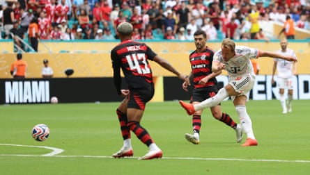

A World Cup is always a better place for the Brazilians. Yet the day after Botafogo fell to their compatriots Palmeiras, Flamengo departed too, cut down by Harry Kane .
That sea of red and black will be missed off the pitch and on it too; they made this a match, scoring twice at the Hard Rock Stadium, where their fans did all they could to make up for the empty seats. But it was Bayern Munich who progressed, the England captain finally securing a victory when he scored his second with just over quarter of an hour left. Those two goals, along with a Leon Goretzka strike and an own goal from Erick Pulgar saw it finish 4-2, setting up a meeting with Paris Saint-Germain in the last eight.
For Flamengo there was only a farewell and one that they might have felt did not do justice to how they had played. And yet they will also reflect on the part they played in their own downfall, the errors decisive in the end. Decisive from the start too, leaving them too much to do. The first of Bayern’s four had come after just six minutes and two more followed before the break, aided by an apparent nervousness about their opponents when pressure was applied.
Flamengo’s goalkeeper Agustín Rossi had already been forced to backpedal to reach an inswinging corner, seen a poor clearance hit his own defender Erick Pulgar to set up a Joshua Kimmich shot, and gratefully watched a punch away hit a black balloon rather than setting up another dangerous delivery when the Brazilians were caught by another cross. This time it wasn’t Rossi struggling to get a clean contact in the crowd, but Pulgar. Jumping by Goretzka, the hint of a hand in his back, he succeeded only in deflecting the ball off the top of his head and into the net.
Bayern could not have wished for a better beginning but the Brazilians weren’t going to back down, and Flamengo responded fast, Gonzalo Plata escaping up the right where they would repeatedly advance and delivering a cross from which Giorgian de Arrascaeta’s header flew just past the post. Despite the errors, there was an aggressiveness and determination to Flamengo that went with the noise their supporters brought and said that this would be a proper game. It was, too, even if Bayern were soon two up when Kane took advantage of Dayot Upamecano’s steal, turned and hit a 25-yard shot that flew in off the post, a deflection taking it away from Rossi.
Harry Kane scores Bayern Munich’s second goal.Photograph: Hannah McKay/Reuters
There had been an element of fortune in that and Flamengo certainly would have been entitled to feel unlucky to trail by two then and even more so a moment later when Manuel Neuer made an extraordinary save from Luiz Araújo, flashing out a strong right hand that had he and Kimmich celebrating. Next Léo Pereira, left footed, struck wide. And not long after that, Araújo superbly took down a ball somewhere up near his neck, spun and volleyed wide. When Gerson belted a shot first time, sending it screeching right through Neuer’s hands to make it 2-1 on half an hour, they had deserved it.
The problem for their manager, Filipe Luís, was that Bayern quickly matched it. Another poor clearance set it up, Flamengo complicit in conceding yet again. It came to Goretzka, lurking outside the area, although there was still plenty to do. He controlled on his chest, took one touch and then, despite the distance, opened up his body to disguise the direction of the shot and calmly yet firmly side-footed it into the corner. Frustration was shown when Pulgar swiped wildly at Kane; misfortune was shown when it was him, not his victim, who came off worse and had to be withdrawn just before the break.
Flamengo kept coming, and were quickly back in it. An Araújo shot was deflected over, and from the corner the ball ran all the way through to the other side of the area. As it was put back in, Michael Olise blocked it with his arm to concede a penalty. A hop, a pause, and without a look Jorginho sent Neuer the wrong way, side-footing into the corner. Behind the goal, they erupted, roaring their team forward on to the front foot. Soon Bruno Henrique escaped behind the Bayern defence, but couldn’t guide his shot on target.
At the other end, Bayern substitute Leroy Sané couldn’t finish from Kane’s cut-back. And then there was Kane again, another error ruthlessly exposed. Dribbling out from deep, Araújo just about escaped the first challenge but he couldn’t escape the second. Konrad Laimer won the ball, Kimmich gave it to Kane just inside the area and that was only going to end one way, the finish so clean, job done his way.